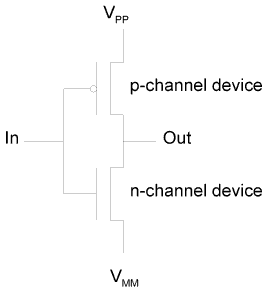
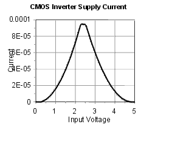
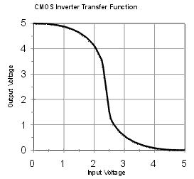
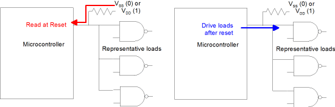
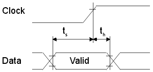
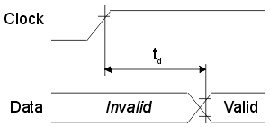
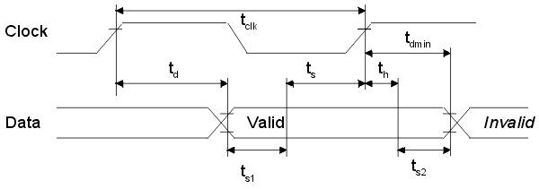

| Previous Section | Next Section | Index | Questions | Search the Text |
So far we have treated the two binary states, 0 and 1, in an abstract fashion. In the real implementation, these two states are represented by different voltage levels. The voltage levels depend on the technology used, but can easily be referred to as high (or "H") and low (or "L"). Normally, the high level represents the 1 state and the low level the 0 state, but this is not always the case, and if switched the levels are said to be inverted or active low.
The 68HCS12 is implemented using CMOS technology. A CMOS inverter, the simplest structure, is typically used to buffer both the input and output pins of the device. Here is the schematic of the inverter:
In a pure CMOS design, the high level is the same as the positive power supply voltage (VPP in the illustration) and the low level is the same as the negative power supply voltage (VMM). When the input voltage to the inverter is low, the n-channel device is turned off while the p-channel device will be turned on and in saturation. The output voltage will therefore be at the positive supply voltage. Likewise, when the input voltage to the inverter is high, the p-channel device is turned off while the n-channel device will be turned on and in saturation. The output voltage will be at the negative supply voltage. Most CMOS parts use either a 5 volt or 3.3 volt power supply, with some recent parts using a 2.5 volt power supply.
The input to the inverter draws no current. The output sees only a capacitive load in a pure CMOS design. This means that there is no static power consumption. (Static means when there are no state changes, such as when the clock is turned off.) The saturated device behaves as a current source until the supply voltage is reached. Therefore the transition time is proportional to the capacitive load. Any number of gates can be driven if the delay is acceptable. Current is consumed during the transition because of charge transfer and also within the inverter itself during the period of time that both transistors are conducting:

So we have the following considerations when running in a pure CMOS environment:
Frequently the CMOS components must be interfaced to TTL (typically 74LS series) components. These TTL components run at different voltage levels than CMOS. In particular, the specifications for the 74LS series are typically:
If we look at the transfer characteristics of the CMOS inverter we see that it changes state midrange (5 volt supply shown):

When CMOS drives TTL, the TTL input voltage levels will be met, even with 3.3 volt CMOS. Our only potential problem is the current requirement to drive the logic low level. However there is a problem driving 5 volt CMOS from TTL. To insure an adequate high level, the TTL device should drive only CMOS, and there should be a pullup resistor to achieve an adequate high level.
Checking the electrical characteristics (in the MC9S12DP256 Device Users Guide, Appendix A) for the 68HCS12 we find that it can drive low to VSS+0.8 volts with a current 10mA. From this we can see that 25 LS TTL loads can be driven. However the loading should be minimized to reduce power consumption and heat generation. On input, the 68HCS12 requires a logic high level of 0.65*VDD or 3.25 volts with a 5 volt supply.
To reduce the number of pins necessary, some pins that are normally used as output pins are sensed as input pins during power-up and microcontroller reset. An example of this are the mode setting inputs which are also used for Port E, described in a later section. The pin should only be driving CMOS logic. A large valued resistor (one that does not constitute a significant load, say 10k ohms) is connected between the pin and VDD (for a logic 1 input) or VSS (for a logic 0 input). At power-up or reset the net is driven to the logic level through the resistor. However after the reset, when the pin is enabled for output, its driving capability easily overrides the load caused by the resistor.

When a mechanical switch is used as an input device, it is important that the input pin is always driven to a logic level and not be allowed to float. A floating input can cause noise and excessive power consumption. The easiest solution in the 68HCS12 is to have the switch connect the pin to ground when closed, and to rely on the available internal pull-up resistor to hold the pin voltage high when the switch is open. Also, contact bounce in the switches can cause false indication of multiple closing. For that reason a low pass filter is necessary. This can be done in software by checking the switch at well spaced time intervals, such as tens of milliseconds, which will be much longer than the period of contact bounce. It can also be done with an RC filter, at the expense of the additional parts
Most inputs are synchronous in that the data is captured on a clock edge. The timing diagram looks like this:

The data must be valid and stable ts seconds before the clock edge, and must be maintained for th seconds after the edge. These are referred to as the setup and hold times for the signal. We need to make sure that these timing requirements are met in order to have reliable operation or any successful operation at all! Some data sheets will give typical as well as min (minimum) values. It is important to only use the worst case, or min values. Designs based on typical values typically don't work. In production, they can yield large failure rates, as much as 100% if a margin batch of parts are received.
To determine if the requirements of the input pin are met, we must look at the output of the device driving the pin. Its timing diagram will look something like this:

Here td represents the delay from the clock edge until the data is valid. This is typically specified as with a max (maximum) value, with no minimum specified. However we can guess that the minimum is no less than 0. Putting this all together, the valid data that is output as a result of a clock edge will be captured at the input pin at the next clock edge. We can make a composite timing diagram like this:

We see that we meet the setup requirements as long as ts1 is greater than zero, where the value is calculated as the clock period minus the output delay and input setup times. The delay time will need to be increased by any intervening logic or large distances between the pins. The hold requirements are met as long as ts2 is greater than zero. In this case we need to know the minimum delay time of the output, which can be hard to calculate. Luckily in most cases th is zero or a very small number and this is not a concern.
Note that systems also need to be concerned about clock distribution to avoid a problem called clock skew. When this occurs, the clock signal arrives at different points in the system at different times. In the figure above the first clock edge is relevant to the output device while the second clock edge (except for the tdmin time) is relevant to the input device. Clock skew will directly affect the values of ts1 and ts2 and can cause the circuit to fail to operate.
We have seen that digital CMOS circuits have a large amount of noise immunity, however that is not true for analog circuits such as found an analog to digital converters, digital to analog converters, and phase lock loops used in clock generation. Because the thin connecting wires between the chip wafer and the physical pins have a fairly high impedance, there is a tendency for noise generated by the digital circuits to be intensified on the chip. To solve the problem, multiple power (VDD) and ground (VSS) pins are used, and they are often separated by their use. For analog power sources, additional filtering is typically used. Analog grounds are kept separate from digital grounds and only connected at a single common point. The MC9S12DP256B has the following power and ground connections:
It is possible to disable the internal 2.5 volt voltage regulator and supply 2.5 volts on VDD1, VDD2, and VDDPLL.
Continue with General Purpose I/O Pins.
Return to the Index.